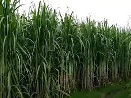
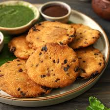

By: Shireesha 8 A
posted on:feb 25th, 2026
Mandya, affectionately known as the "Sugar City" (Sakkare Nagara), is an agriculturally rich district located between Bengaluru and Mysuru. It is a land defined by the life-giving waters of the Cauvery River and a legacy of visionary engineering.

The prosperity of Mandya is deeply tied to the Mysore Sugar Company (Mysugar), established in 1933 by Maharaja Krishnaraja Wadiyar IV and Sir M. Visvesvaraya. It was the first sugar factory in the state, transforming the region into a major hub for sugarcane and jaggery production.
One of Mandya's most famous landmarks is the Krishna Raja Sagara (KRS) Dam, a gravity dam built in 1924 using surkhi mortar instead of cement. Located just below the dam is the world-renowned Brindavan Gardens, a terraced garden inspired by the Shalimar Gardens of Kashmir. It is famous for its musical dancing fountains that come to life with colourful lights every evening.
Mandya is home to the spectacular Shivanasamudra Falls, where the Cauvery River splits into twin cascades: Gaganachukki and Bharachukki. This site is not only a natural marvel but also a historical one, as it hosted Asia’s first hydroelectric power station in 1902, which famously provided the first electric power to Bengaluru.
The district is dotted with sites of immense historical and religious importance:

A visit to Mandya is incomplete without tasting the Maddur Vada, a crispy, savoury snack made from flour, onions, and spices. Originating from the town of Maddur, it has become a legendary delicacy enjoyed by travellers across the state.